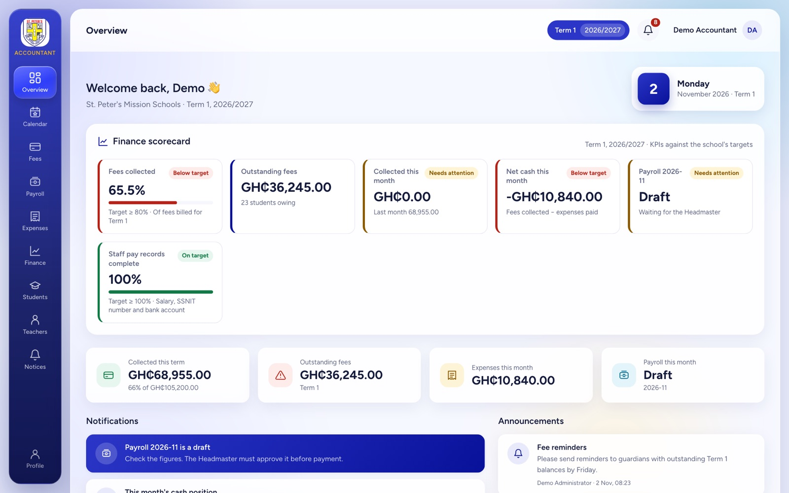
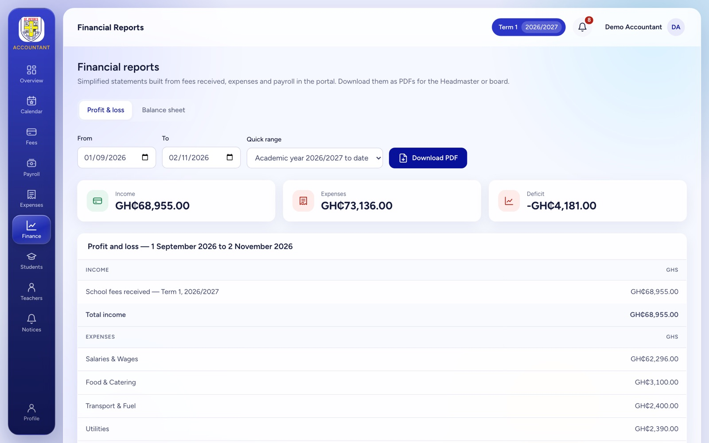
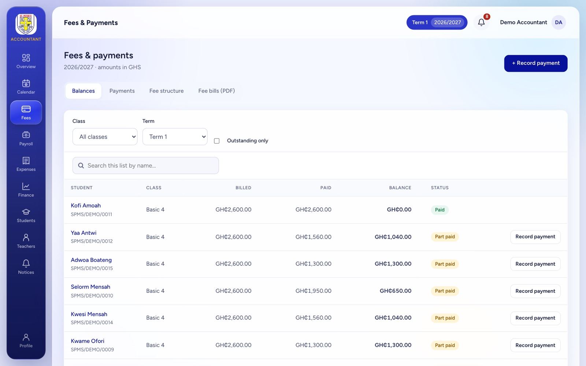
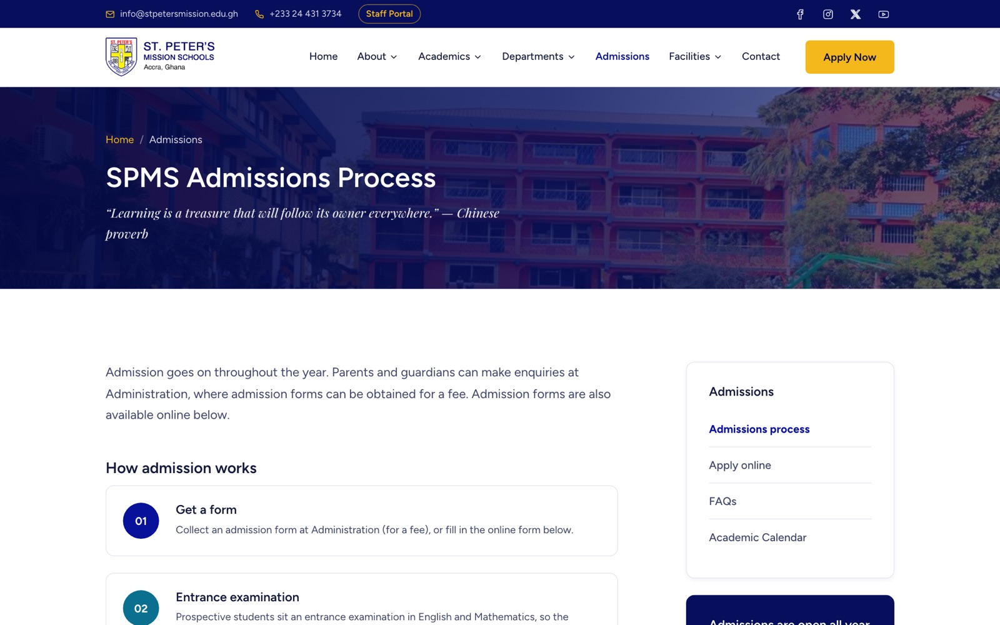
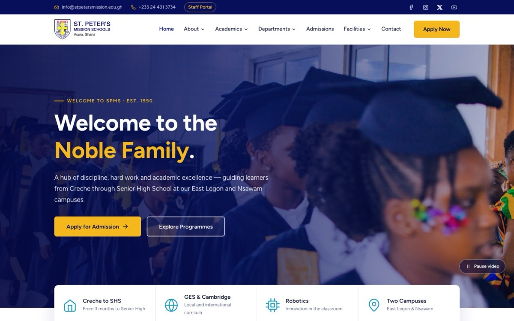

Case study · School system
St. Peter’s Mission Schools — website & staff portal
A public website and a role-based staff portal for a Creche-to-SHS school in Accra. Parents apply online; inside, the headmaster, administrators, teachers and accountants each get their own view of students, attendance, grades, fees, payroll and the school’s finances.

01The problem
Running a school means tracking hundreds of students across levels from Creche to SHS, collecting fees in instalments, paying staff with SSNIT and PAYE deducted, and reporting to the headmaster and board. Much of that usually lives in paper registers, spreadsheets and WhatsApp messages.
The goal was one system where each person sees exactly what their job needs, with the accounting done properly: fees, payroll and expenses that flow into a profit and loss statement and a balance sheet.
02What I built
Public website
Programmes, departments, facilities, calendar and an online admissions form that sends each application straight to the portal.
Fees & fee bills
Fee structures broken down per class level, part payments and balances, and PDF fee bills emailed to every parent.
Payroll
SSNIT tiers and GRA PAYE bands applied to each payslip. The accountant prepares, the headmaster approves, and paying records the expense.
Financial reports
Profit and loss for any date range and a balance sheet as at any date, downloadable as PDFs on the school letterhead.
Academics
Attendance, grades, timetables without clashes, and report cards with class position, emailed to parents as PDFs.
KPI scorecards
Every dashboard opens with targets for that role: fee collection, attendance, pass rate, payroll status.
03How it works
The website is static HTML, CSS and JavaScript. The portal is a Node.js and Express server with a SQLite database and a plain JavaScript front end, so it can run on a modest school server.
- Permissions enforced on the server. A teacher who types another class’s address still gets “You do not have access”; hiding menu items isn’t treated as security.
- Separation of duties. Accountants record expenses and prepare payroll, but only the headmaster can approve them for payment, and approved payroll figures lock.
- Privacy by role. Teachers see their students’ health and special-needs notes; accountants never do.
- Installable app (PWA). Staff can install the portal on their phones; school data is never cached, so records are always current.
- Audit log. Sign-ins and changes are recorded for the system admin to review.
04Screens




05What I took from it
This project sits right where my accounting and my development work meet. Getting payroll deductions, fee arrears and the link from transactions to the financial statements right mattered as much as the screens did, and approval steps like the headmaster signing off payroll are internal controls written into code.
Next: putting the portal online on the school’s server and connecting an SMS provider for parent broadcasts.
Next case study